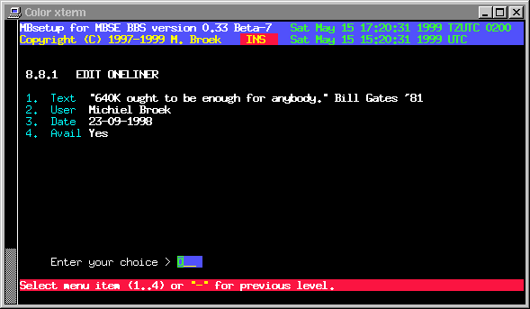

Last update 02-May-2013
FTNd Setup - BBS Setup - Oneliners.
Oneliners.
Oneliners are small quotes that can be random selected and displayed to your users. From the same database oneliners can be selected and inserted at the bottom of messages. With the oneliners setup you can edit, add, delete and import oneliners. Import is done from plain ASCII textfiles, one quote on each line. The lines should be maximum 70 characters long.

 Back to BBS index
Back to BBS index